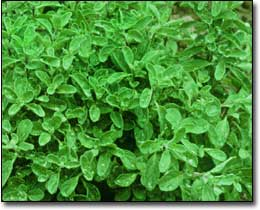

The daintiest of the oregano tribe, marjoram has a minty, sweet flavor with rich savory undertones that sets it apart from its more strongly flavored oregano cousins.
Native to North Africa and western Asia, marjoram (Origanum majorana) is sometimes called "knotted" marjoram because the tiny white flowers emerge from knot-shaped buds. You can use this flower characteristic to help confirm that you do, indeed, have marjoram rather than a related oregano, of which there are more than 30 species. This herb sometimes is called sweet marjoram, too, because no other oregano matches its clean, sprightly flavor.
To the ancient Greeks, marjoram was the herb of marital bliss. Thought to be a favorite of Aphrodite, the goddess of love, it was woven into garlands that brides and grooms wore on their heads. Also according to ancient folklore, sleeping with a bit of marjoram tucked under your pillow was supposed to promote dreams of true love. And before the Middle Ages, many people believed that planting marjoram on graves helped assure the happiness of departed loved ones.
Marjoram is not considered an important medicinal herb, but a tea brewed from its leaves may help with indigestion, headache or stress.
The herb's flavor more than justifies growing it in your garden for culinary purposes, though. Think of marjoram as a tame oregano and use it with confidence in Italian-style, tomato-based dishes such as pasta or pizza, or as an accent for most vegetables, especially potatoes, whether they're served hot, or marinated and served cold. Marjoram also is good on fresh tomato sandwiches, and it pairs well with eggs or cheese. A light sprinkling adds savory flavor to cream-based sauces or soups, especially potato soup, and to savory herb butter, too. And, the flowering tops are a pretty addition to herbal vinegar.
Dried marjoram delivers flavor nearly equal to that of the fresh version; on the plant, the flavor usually peaks just before the flower buds form, though the buds are edible, too. When drying marjoram for kitchen use, lay 3-inch-long stem tips on a dry cookie sheet and place the cookie sheet in a 150-degree oven for two to three hours; this method retains marjoram's essential oils and the green color of its leaves. Store the dried stems with their leaves intact in an airtight container in a cool, dark place; when you need some leaves for a recipe, just strip the right amount from the stems.
A fast-growing plant, marjoram will produce a steady supply of new growth if it is regularly trimmed back. Should you have more stems than you can use in the kitchen, mix them into potpourris, sachets, tussie-mussies or herbal wreaths; the flowering tops sometimes are used as a source of beige or gray dye, too.
Growing Your Own
Marjoram cannot tolerate subfreezing temperatures, so it usually is grown as an annual, but it can be carried over because it is one of the easiest herbs to propagate from stem cuttings (described below), and it grows beautifully indoors in winter near a sunny, south-facing window.
In the garden, marjoram never grows more than 15 inches tall, and the soft stems tend to sprawl as they mature, so this herb makes a good edging plant. You can start with seed sown indoors in late winter, but germination usually is only about 50 percent, and early growth is very slow; a faster option is to buy new plants in spring.
Most marjoram plants are grown from cuttings, so they are well rooted and ready to grow as soon as you transplant them into warm soil. After the last spring frost, set out plants in full sun, in soil that is gritty and fast draining with a near-neutral pH. Alternatively, you can grow marjoram in containers; it's a good plant to mix with other culinary herbs such as basil and thyme.
Feed your marjoram plants monthly with an all-purpose organic plant food, or more often if you're growing them in containers. Take care not to overwater marjoram, but watch closely for signs of drought stress, too. Plants that wilt for more than a few hours in midday need more water. Cut stems back often to encourage your plant to branch, or wait until just before the flower buds form to harvest them in bulk by shearing the whole plant back by two-thirds its size. Sufficient stems for a second cutting should develop by early fall.
Take cuttings to root in midsummer: Cut several 3-inch-long stem tips that show no flower buds, remove all but the six to eight topmost leaves and set the cuttings to root in moist seed-starting mix. Placed in a shady spot and kept constantly moist, they should develop vigorous, new root systems in about three weeks. At that time, transplant the rooted cuttings, two each to a 6-inch pot filled with potting soil. A few weeks later, pinch back the tops to encourage branching.
With casual care, these new plants will continue to grow through fall and winter, and into the following spring. Soon after moving the plants outdoors, take cuttings from your overwintered marjoram, allow the cuttings to develop roots and then transplant them to the garden in early summer. This way, you can keep a strain of marjoram indefinitely, and always have plenty of fresh sprigs for use in the kitchen.
Mother Earth News contributing editor Barbara Pleasant lives in North Carolina. Her newest book is The Whole Herb, released by Square One Publishers.
Pasta with Broccoli and Marjoram
Cooking the pasta with garlic imparts
a mild flavor complement to marjoram's refreshing zing.
4 ounces whole-wheat pasta
2 large garlic cloves, quartered
3 cups broccoli, cut into bite-sized pieces
3 ounces reduced-fat cream cheese (Neufchatel)
1 tablespoon dry white wine
1/4 teaspoon salt
1/8 teaspoon freshly ground pepper
1 tablespoon fresh marjoram (or 1 teaspoon dried)
1/4 cup freshly ground Parmesan cheese
1 medium tomato, chopped
In a large cook pot, bring the water for the pasta to a boil and add the garlic cloves. Cook the pasta according to package directions. Three minutes before the cooking time is up, add the broccoli to the pot. After two more minutes, when the pasta is just done and the broccoli is tender but still firm, turn off the heat, drain the cooking water and return the pasta, broccoli and garlic to the pot. Add the cream cheese, wine, salt, pepper and marjoram, and as the cream cheese melts, toss all the ingredients to mix well. Place the pasta mixture on a warmed serving dish and top with Parmesan cheese and chopped fresh tomatoes. Serves 3.
|
 |
|
|